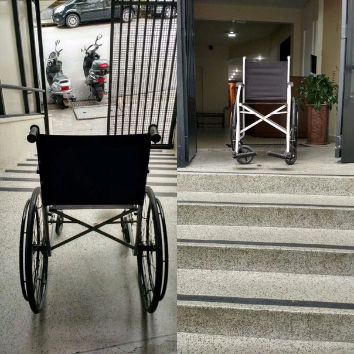

Barreiras vão além de escadas
O artigo 3º considera barreiras nos espaços, no transporte, na comunicação, nas atitudes e na tecnologia.
ACESSIBILIDADE · Lei nº 13.146/2015
A LBI protege os direitos e as liberdades fundamentais das pessoas com deficiência em igualdade de condições, visando à inclusão social e à cidadania.

UM POUCO DE CONTEXTO
Instituída em 2015, a lei tem como base a Convenção sobre os Direitos das Pessoas com Deficiência e reconhece que barreiras podem limitar a participação social.
Base da leitura: Lei nº 13.146/2015.
PARA ENTENDER O ESSENCIAL
O artigo 3º considera barreiras nos espaços, no transporte, na comunicação, nas atitudes e na tecnologia.
Os artigos 27 e 28 tratam do sistema educacional inclusivo e de medidas para acesso, permanência, participação e aprendizagem.
O artigo 28, § 1º, proíbe que instituições privadas cobrem valores adicionais para cumprir as medidas de inclusão ali previstas.
Não presuma o que uma pessoa consegue fazer ou de que apoio precisa. Pergunte, respeite sua autonomia e inclua a pessoa nas decisões que dizem respeito a ela.
DA IDEIA PARA A PRÁTICA
Os exemplos a seguir são fictícios e servem para iniciar a reflexão. O encaminhamento depende de cada situação.
SITUAÇÃO 01
Um material usado pela turma não permite que uma colega acompanhe o conteúdo.
A escola pode ser procurada para discutir os recursos de acessibilidade necessários à participação e à aprendizagem.
SITUAÇÃO 02
Uma escola particular anuncia uma taxa de inclusão ligada à deficiência de um estudante.
A família pode pedir explicação formal e orientação: a LBI proíbe valores adicionais para as medidas previstas no artigo 28, § 1º.
VOCÊ PODE BUSCAR ORIENTAÇÃO
Converse com a instituição responsável e registre a barreira encontrada. Procure a Defensoria Pública ou o Ministério Público para orientação sobre direitos; violações também podem ser relatadas ao Disque 100.
Conhecer os canais de apoio →Artigos 1º a 4º, 27 e 28.
Ler Lei nº 13.146/2015 no Planalto ↗Fontes consultadas em . Confira alterações posteriores no texto oficial.
CONTINUE A CONVERSA